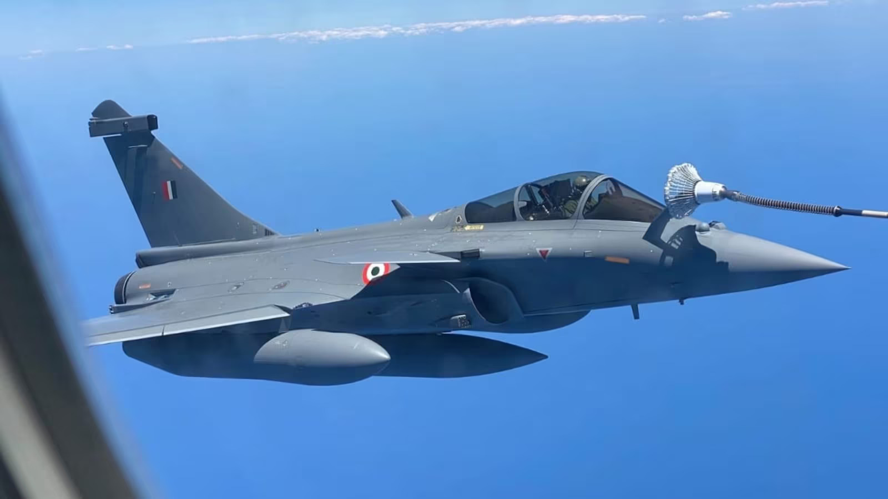
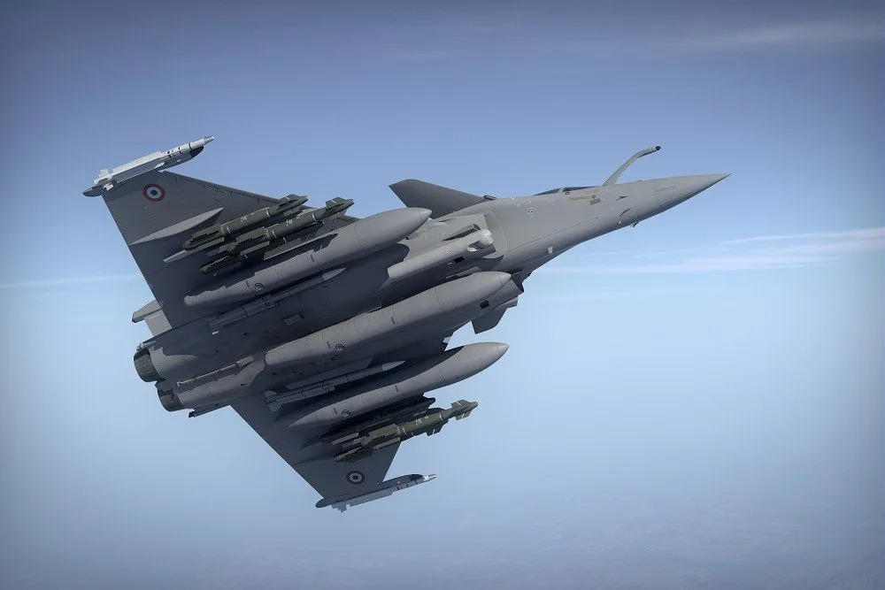
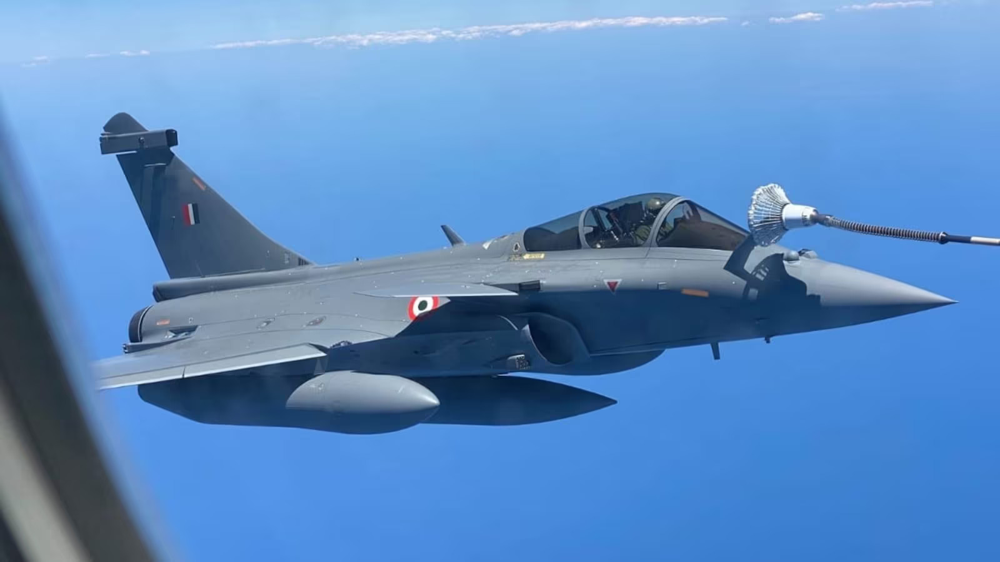
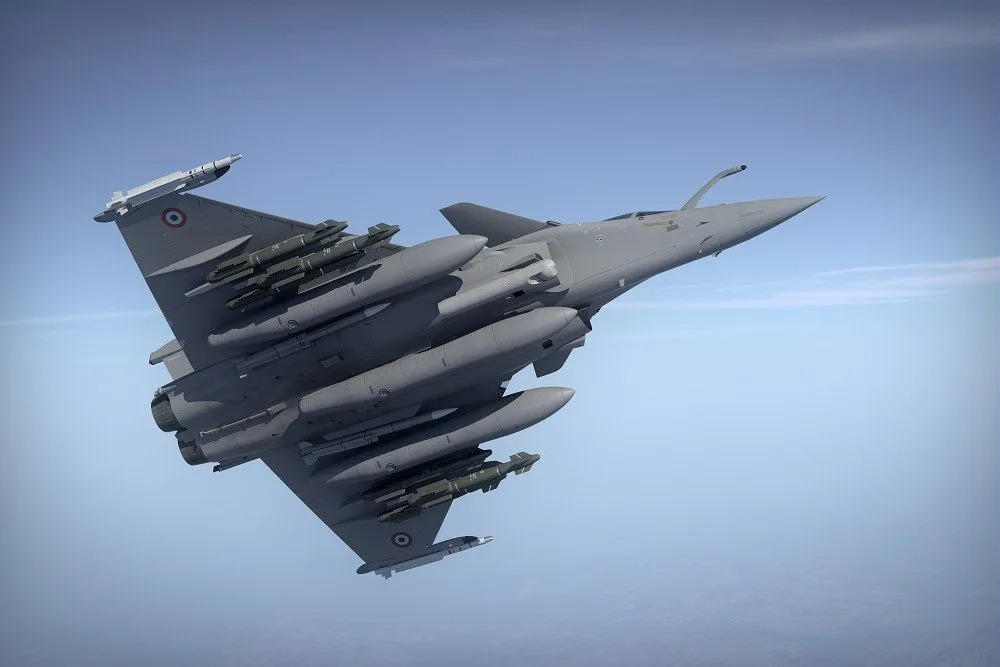

Dassault Rafale
Manufacturer
Dassault Aviation
Country of Origin

France
Specifications
| Parameter | Value |
|---|---|
| Length | 15.27 m |
| Wingspan | 10.80 m |
| Height | 5.34 m |
| Max Speed | Mach 1.8 |
| Range | 3,700 km |
| Service Ceiling | 15,235 m |
Armaments
The Dassault Rafale is a highly versatile, twin-engine, multi-role fighter aircraft capable of carrying an array of weapons and excelling in deep-strike, air defense, and air superiority missions. It features:
- Scalp EG cruise missiles
- MICA air-to-air missiles
- Meteor long-range air-to-air missiles
- AM39 Exocet anti-ship missiles
- Laser-guided bombs
- 30mm cannon with 125 rounds
Countries Currently Using Dassault Rafale
- France
- India
- Qatar
- Egypt
History
The Dassault Rafale is a cornerstone of French military aviation, serving as the primary fighter for the French Air Force and Navy. The development of the Rafale started in the early 1980s, with the first prototype flying in 1986. Officially introduced in 2001, the Rafale has since been adopted by several countries worldwide and has seen action in various conflicts, showcasing its capabilities in numerous combat roles.
Gallery
 


